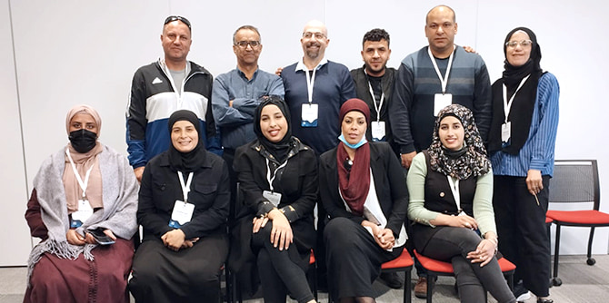

שלוש המועצות הבדואיות אלקסום, נווה מדבר ושגב שלום כוללות 35 כפרים בלתי מוכרים, בהם כפרים שאינם מחוברים לרשת החשמל ולקווי מים, ואין אליהם דרכי גישה מוסדרות. יישובים אלו מצויים בתחתית הסולם הסוציו-אקונומי במדינת ישראל.
מהי התוכנית ומדוע היא מיוחדת כל כך
עמיתות ועמיתי התוכנית – פעילים בעלי פרופיל תעסוקתי מרשים ופוטנציאל צמיחה גבוה – מתמודדים עם אתגרים כבדי משקל ופועלים במציאות מתוך תודעת שליחות היסטורית, פשוטו כמשמעו.
עשרה מן העמיתים הם אנשי חינוך ומנהלים. האחרים פועלים בשדה החברתי (שילוב פגועי נפש בקהילה, טיפול בילדים בסיכון, הדרכת מורים וייעוץ חינוכי, עבודה סוציאלית וכדומה). באופן טבעי, זו גם זירת ההשפעה המרכזית שלהם, ועל כן הם מקדמים שינויים בעיקר בתחומים הללו. האתגרים רבים ונוקבים, וברור לעמיתים שדבר שזור בדבר וכי קשה מאוד לחולל שינויים במישור נתון בשעה ששאר מישורי החיים נותרים בעינם, וכך עולה השאלה: מהי נקודת המוצא שלנו לשינוי? במילים אחרות: מהי נקודת ארכימדס לשינוי אשר הצלחתו אינה תלויה בריבוא גורמים שאין לעמיתים שליטה עליהם, ובה בעת ליצור שינוי שיהיה בר-השפעה על תחומי חיים אחרים? רצון זה בשינוי בא לידי ביטוי גם בכינויה של התוכנית בפי אנשי מרכז מנדל למנהיגות הנגב – תוכנית נק"ש (נווה מדבר, אלקסום, שגב שלום), מילה שבערבית פירושה לחרוט, להשאיר חותם.
מסע בן אלף קילומטרים או מסע קדימה בזמן
בחפשנו את הנתיב לשינוי, אנו זוכרים שמדובר בקהילה הענייה בישראל, המונה מאות אלפי אנשים, רובם המכריע ילדים, אשר מפלסת דרך באיטיות רבה במרחב ובזמן. גם מסע בן אלף מילין ראשיתו בצעד קטן אחד. הצעד הראשון של עמיתי התוכנית היה להתבונן בנקודת הכאב האישית שלהם, ורק לאחר מכן להמיר אותה בהגדרת בעיה כללית שעמה יתמודדו בהמשך דרכם הארוכה.
כדי לבנות מפת ניווט במציאות הסבוכה של חיי הבדואים בנגב, אנו נדרשים להציב תמונת עתיד – חזון שיהיה שאפתני ומרחיק לכת ככל האפשר, ובה בעת שלא יהיה אוטופי ומנותק מן המציאות יתר על המידה. התבוננות מפוכחת במציאות ובעצמנו אין פירושה קידושה של אותה מציאות או השלמה עם מגבלותינו. אדרבה: חלק מן התוכנית, בראשית דרכה, מוקדש לפיתוח יכולתנו לשאוב השראה מזולתנו ולתרגם את התפעלותנו לשפתנו שלנו. כך עולה בידנו להבחין במטרה שאליה נרצה להגיע. ערכים ופיתוח מידות כמו צדק ואומץ לב הם שמאפשרים לנו לכנות את המטרה בשם ולהצהיר על נחישותנו לחתור אליה.
ממעוף הציפור ומתחת לפני האדמה – דוגמה לבעיה אחת ושתי אסטרטגיות שינוי
אחד העמיתים בתוכנית, חסן אלג'נאמי, מנהל בית ספר ביישוב אבו-קרינאת, מוטרד מן העובדה שתלמידים רבים נושרים מן הלימודים בתיכון – בין באופן גלוי ובין באופן סמוי. הוא מייחס את סיבת הנשירה להיעדר אמפתיה בבתי הספר העל-יסודיים. רק סביבה אמפתית, הוא מאמין, תוכל לגלות רגישות לנסיבות חיים קשות של תלמידים רבים ובה בעת לרצות בהישארותם במערכת החינוך – הישארות אשר בעיניהם של הצעירים נראית לעתים קרובות חסרת תוחלת.
תמונת העתיד שמשרטט העמית היא הקמתן של מסגרות חינוך רצופות: מגן הילדים ועד כיתה י"ב. מסגרת כזאת, שתנוהל תוך שימת לב לחמימות אנושית ולא רק למקצועיות אקדמית, תתמודד כהלכה עם הנשירה. ואולם, בחברה הערבית בנגב אין מסגרות כאלה, אף שבחברה היהודית הן אינן נדירות.
עמית אחר, סאלם טוחי, מנהל בית ספר אף הוא – בית הספר ביר עסלוג' מן היישוב ביר הדאג', מוטרד מאותה בעיה עצמה ותולה את הסיבה המרכזית לנשירה בהיעדרה של תמונת עתיד ברורה ובהיעדר מושג אודות האקדמיה ומהותה. לכן, יוזמת השינוי שלו כוללת חשיפה לאקדמיה עוד לפני שהתלמידים מגיעים לגיל התיכון, כדי לטעת בהם סקרנות ומשיכה להעמקה בלימודים.
עמיתי התוכנית מנדל למנהיגות אזורית באלקסום, נווה מדבר ושגב שלום הם האור לפני המחנה – גברים ונשים משכילים, פתוחים להשתנות ומחויבים לשנות. אין ספק בלבנו שבעתיד הלא רחוק נתגאה בהם.
 עמיתי התוכנית, ביום העמית – מפגש כלל עמיתי קרן מנדל-ישראל
{kind=link}
{kind=link}